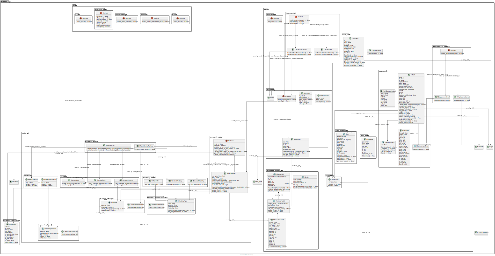

Do you know the hidden paths of your code?

2 Part I: A picture says more than a thousand words
And so does a diagram. This part is about my motivation for doing this work. If you are only interested in results, skip it and go to part II.
2.1 Software engineering is about reading code
There are 10 types of people in this world, those who understand binary and those who don’t.
2.1.1 What Beginners and Non software Developers do not get
A novice expects that developing software is all about writing code. And I have to admit that just hacking away can initially feel good. Directly coding and doing everything from scratch feels so powerful. The raw power is just at your fingertips. You are the wizard of the computer - in then end you will pay dearly. You get stuck in the mud of your code. This is blind activism.
Large companies are not immune to this. In fact, sometimes the management structure incentivizes quick hacks and fast coding over constant architecture development.
2.1.2 The role of non-software people
The rise of non-code application and then the onset of the hype of LLM in 2022 have led to the fear that programming and software developers have no future. In the future, anybody can code. Personally, I disagree with this. My argument is not purely based on self-preservation. Instead, I believe AI can replace that simple apps that were done before by a single developer. However, the software engineers concerned will move to bigger projects. Similar as we do not know every single assembler instruction or binary instruction, we might no longer know every single code line in our precious masterpiece.
Teams will focus on higher value tasks or just be quicker in developing new features. Engineers will focus more on higher-level tasks: system engineering, architecture and customer interaction. There could be a conversion of specialized engineering roles. The same team might do requirements, design, Code, and testing. Concentrating multiple roles on fewer staff. The cost of friction in human interactions will do the rest. The excessive cost of inter-team communication outweighs specialized teams’ remaining advantages. But until we get there, it will be a few more years with a lot of unforeseen changes.
2.1.3 We always face new code
As we learn more and more during our journey as software developers, we discover reading code is far more important than writing. Usually we read someone else’s code and try to understand it.
For consulting-work or a short-term project, this is obvious.
If you always work on the same enormous project, you need to switch assignments and will work on different components. In fact, a dynamic and growing software business will always need to pivot the existing engineering staff to other tasks. Just hiring new engineers is not cost efficient.
Even when you work all by yourself. Remembering the details of your code becomes difficult after about six months.
So regardless of your works nature. If you are productive, you will frequently encounter new code which needs to put into your works context. We need to understand if the code is doing what it should do. Figuring out what it should is about as hard as ensuring that it is doing this.
That is why I believe software engineers can not be replaced. Problem discovery and formulation is currently engrained in the process of writing code. Removing or simplifying the process of writing, will not remove problem discovery and formulation.
2.2 How we approach unknown code
2.2.1 Missing documentation makes it harder
Sadly, not all codebases have perfect documentation. The more innovative the business is, the more it will rely on exploration. Often, the original creator quickly produced and then abandoned his software. Take open source source software. While there are many gems with an outstanding code standard, there are as many counterexamples. Even more, even a perfectly documented code, becomes difficult to use if relies on a framework and there are major shifts in the framework.
One such shift is the change from Python 2 to Python 3. Projects can go stale as it becomes more difficult to update them.
The lack of documentation and especially lack of documented software architecture profoundly hinders grasping the code from a top-down perspective. The only solution, dig through the code.
2.2.2 Poorly designed software takes a long time to understand
Poorly written software may have suboptimal abstraction and encapsulation.
An example: Because of performance issues, it can be necessary to use a data structure as an input/output parameter. However, while this is comfortable, it increases code complexity dramatically. This mechanism invites us to just pass on a massive data structure and change a bit about it. Take enough of these functions and complexity will blow up in your face. A similar code smell is the god object. In such a class, side effects are none-obvious.
The only way to uncover the hidden connections is to read the complete code and keep track of the connections and dependencies which are important to you. Even with a modern IDE (search, find usage), this remains a very time-consuming task.
2.3 SOLID principles and model-based system engineering
2.3.1 Towards a clean architecture
While I read about the importance of SOLID principles and good architecture in Clean Architecture, I thought about the code I produced myself. Where did I not apply these principles?
My biggest programming sin is definitively the code that I wrote during my PhD. A non-linear finite element solver, with different material models and integration schemes.
It lacked so many things. While it had classes, it did not obey all SOLID principles. In particular, it violated dependency inversion. The most abstract classes depended usually on the most concrete classes. For example, instead of using a high level builder, an intermediate level featured flags to select the proper material model. This whole architecture made it quite difficult to test the code. Of course, it did not matter to me, as the thoughts of code coverage and TDD had never crossed my mind.
Now, having done a in-depth study of ‘Clean Architecture’ and the details about dependency inversion, I wanted to make a clean architecture for my FEM solver.
I did not even know where to start. Of course my code had an architecture. The architecture had, however, mostly grown organically.
2.3.2 Model based engineering
As a software developer, I’ve grown fond of using simple Mermaid or PlantUML diagrams. These small diagrams are more formal than paper-based drawings, while still allowing enough freedom to detail the abstractions. UML is the go to tool to formalize your architecture.
Choosing a pure paper based approach or digital paper in form of text files, one faces the issue to keep source and documentation always in sync.
It was when working on a large-scale project with a dedicated modelling team; I learned about model-based system engineering. Tools like Enterprise Architecture can generate code from UML diagrams. Some of those tools can even analyse your code and create UML diagrams.
As a result, you get two views on the same software. One abstract (UML/SysML) and one very concrete (Code). The computer takes care to keep both in sync.
The abstract system models are usually consistent over several abstraction levels. However, the connection to code only happens at the lowest level. If the connection were to happen on any level, these models could act as the zoom button for the software.
The major drawback? Usability. Nowadays, software engineers use an IDE. And once being accustomed to their favourite IDE, they do not want to leave it.
Tools like Enterprise Architect have a steep learning curve, while not having any of the features a modern IDE has. In practice this seems not important. Many safety-aware businesses using model-based system engineering create special roles dedicated to these tools. This introduces the drawback of splitting the model and the code over two people instead of bringing everything closer together.
In addition, these tools can be pricey. A no-go for small to medium-sized projects.
Another alternative I discovered is the C4 diagram https://c4model.com. There are some projects that aim to automate the creation https://structurizr.com/.
2.4 The two-way problem of model-based engineering
2.4.1 Forward: Code to diagrams
Generating diagrams from code is state-of-the art. In the following I will only dive into the tools for this usage. Most of the time, tools focus on the class at hand or automatic generation of class diagrams over several classes.
2.4.2 Backward: Diagrams to code
The other way round generating code from diagrams can be much more difficult. Existing system engineering tools can do this. Correct application of MBSE, in fact, results in very detailed diagrams; the model has already gathered all the information. Therefore it is easy to afterwards generate template based modules. This was actually not my idea when I thought about abstraction and a zoom button. As a side node, doing so usually leads to a schism between software engineers and system engineers. In addition, the lack of connection between the two tools usually results in duplicated information.
A better approach could be the use of multimodal large language models. In an ideal world, we would draw a diagram and describe what we want. The computer would adjust the diagram to the correct constraints and then implement the code. Currently, in 2025, that is not how code generation works, even though the field is moving fast. The part of the constraints is lacking.
There are disadvantages to this approach. First, such diagrams would need to be flexible enough to facilitate discussion with all stakeholders. Discussions often leave out important details. Potentially, by writing done these assumptions, a LLM could take care of adding the abstracted information in the diagram.
Second, Model-based engineering enforces formalism, leading to better performance through standardized solutions. However, for the highest performance, we usually need to cut corners. This requires the direct modification of the code by us. That again would be the other direction again. Depending on the domain, it could be faster to directly write the code yourself.
3 Part II: capturing all dependencies in one diagram
When I looked into the subtopic of code to diagrams, I focused on Python. Static-typed languages like C++ are even better for code analysis because of the explicit typing in the code. Many C++ programmers use doxygen extensively. For Python, the code needs to have type hints, for everything beyond base types.
I found a few open source tools: Pyreverse, Pynsource and Py2Puml. As I explain below, Py2Puml is the best one. However, it falls short in the documentation of class methods. Not really satisfied with the output, I wrote some modifications. Finally, I considered how to better caputure dependencies using graphs. That is why I wrote Py2Graph.
3.1 Meet our guinea-pig package: Productworld
To evaluate the different programs, I came up with a simple package: Productworld.
Below, you find the package structure and the full code.
Important to me was the use of an abstract class and the occurrence of the other classes in signature, member list, and function bodies. I also wanted free functions to be documented. Regardless how important, free functions do not exist in a standard UML class diagram. So I expected the tools to fall short here.
3.1.1 Packages and Components
productworld/
├── base/
│ ├── base.py
│ └── customer.py
└── products/
└── products.py
3.1.2 The full code
# base.py
from abc import ABC, abstractmethod
class Product(ABC):
def __init__(self, product_id, name):
self.product_id = product_id
self.name = name
@abstractmethod
def get_price(self):
pass
class NewOrder:
def __init__(self, order_id, product: Product, quantity):
self.order_id = order_id
self.product:Product = product
self.quantity = quantity
def calculate_total(self, product:Product)->int:
return self.product.price * self.quantity
class Order:
def __init__(self, order_id, product:Product, quantity):
self.order_id = order_id
self.product = Product()
self.quantity = quantity
def calculate_total(self)->int:
return self.product.price * self.quantity
def fancyFunc(order: Order):
return 42
def funkyFunc():
return 42
# customer.py
from typing import List
from productworld.base.base import Order,fancyFunc, NewOrder
class Customer:
def __init__(self, customer_id, name):
self.customer_id = customer_id
self.name = name
self.orders = []
self.newestOrder :NewOrder = NewOrder()
def add_order(self, order: Order):
self.orders.append(order)
self.orders.append(NewOrder())
fancyFunc(order)
def get_total_spent(self)-> int:
return sum(order.calculate_total() for order in self.orders)
# products.py
from productworld.base.base import Product
from productworld.base.base import funkyFunc
class PhysicalProduct(Product):
def __init__(self, product_id, name, price):
super().__init__(product_id, name)
self.price = price
def get_price(self):
return self.price
class DigitalProduct(Product):
def __init__(self, product_id, name, price, discount):
super().__init__(product_id, name)
self.price = price
self.discount = discount
funkyFunc()
def get_price(self)->int:
return self.price * (1 - self.discount)
class Productfactory():
def create_product(self,pid:str)->PhysicalProduct|DigitalProduct:
return PhysicalProduct()
def create_product(self,pid:str)->PhysicalProduct|DigitalProduct:
return PhysicalProduct()3.2 Existing tools
3.2.1 Pyreverse
Pyreverse is part of Pylint and allows you to create an UML diagram for your code.
If you have Pylint installed, you can easily run it with the following command:
pyreverse -ALSmy -o puml --verbose . What works well:
Inheritance is correctly captured
Aggregation is correctly captured
Argument and return types are identified
What does not work:
Packages and components are not shown
Argument and return type dependencies are not resolved
It is a pure UML Class diagram, therefore free functions are not covered
Usage of classes in function body is not covered
This is the picture I got:
3.2.2 Pynsource
Next I tried Pynsource, which offers a GUI. Adding new files is cumbersome. It’s impossible to update a complete model. Overall, I do not recommend this. The result is worse than Pyreverse.
What works:
Inheritance is correctly captured
Aggregation is captured as a normal dependency
Usage of classes in function body is covered as dependency
What does not work:
Packages and components are not shown
Argument and return type dependencies are not resolved
It is a pure UML Class diagram, therefore free functions are not covered
Member types are not identified
In the free version, no saving of the UML file is possible, only a screenshot.
3.2.3 Py2puml
Finally, I tested Py2puml.
What works:
Inheritance is correctly captured
Aggregation is captured as a composition
Member types are identified
Packages and components are not shown
Abstract class is correctly shown
As I am focused on a clean architecture with dependency inversion, the correct capture of the abstract class is strong plus.
What does not work:
Class methods are not shown and as such, no argument and return type dependencies are resolved
It is a pure UML Class diagram, therefore free functions are not covered
Usage of classes in function body is not covered
Overall, I like this the most. The packages reflect the driectories and the components the files. The notion of different levels can be found in this picture.
3.3 My Contribution
As highlighted above, none of the programs clearly delivered what I wanted to do.
My favourite was Py2Puml. First, I addressed its major drawback: missing functions.
3.3.1 Py2puml with methods
Luckily for me, there is a py2puml fork that tries to deal with the class method. Details can be found in the pull requests for the py2puml, here.
Unfortunately, the structure of py2puml has changed since the fork date, and the merge is not that straightforward. The PR remains in limbo for 2 years.
I performed a rudimentary merge of this fork, but this clearly ruined my secondary goal of finding something suitable for production, not just a hobby. I now have loaded myself with a vast pile of technical debt.
My code is often a mixture of classes and free functions. Therefore, I collect all free functions in Annotation called Methods. Such an annotation exists in every component, every file. Some other minor changes were done as well.
These changes addressed almost all the critical points of Py2Puml
What does still not work:
- Usage of classes in function body is not covered
The picture is now much more detailed. There are several connections that did not exist before. The richness of this picture would allow us to add different zoom levels and options. We could clearly hide, for example, the usage of free functions within the same component. However, we should highlight usage across components.

3.3.2 The next level: Py2Graph
3.3.2.0.1 Problem description
There remains the missing linkage of functions that are used within the body of another function. For an inspection, that is quite bad. By changing a class A that is used within the body of another class’ B function, we influence behavior of class B. This is exactly the sort of connection we are interested in and which should be visible. The question is Which classes does class A influence.
The second drawback is performance. Even on this tiny example, the Py2Puml requires almost 20 milliseconds. For something which should work in not much more than a few milliseconds, that is too long.
3.3.2.0.2 Digging deeper
The reason is in the architecture of Py2puml. It basically collects lists and then merges them together. To correctly cover all dependencies, we need two passes on the entire codebase. First, we identify existing functions, and then we identify their usage within other classes.
The same issue applies for the function body. In theory that could also be made to work for the original approach using list.
3.3.2.0.3 My Approach: Graphs
I avoided these issues by using another data structure. Instead of using lists, I moved to a graph-based analysis.
My analysis first analysis all entities (files, modules, classes, functions, members) in hierarchical order. I create a graph node for every parsed entity.
Edges link contained entities or types with their parent. So a module contains classes, which contain functions and members. This approach ensures coverage of connections within functions. Naturally, this analysis might not include the class used, thus preventing a link. This problem is the two pass issue, again.
We resolved the two-pass issue by using a placeholder node for expressions the parser had not yet visited. Once the parser analyzes the true entity, it replaces the placeholder node, but keeps its connections.
If placeholder nodes remain, that is usually a sign that the expression is not from the package in analysis. The system suppresses placeholders in the output.
3.3.2.1 Analysis of solution
My approach only took 3ms. The speedup actually surprised me. I attribute it to the more efficient implementation of networkx digraph, compared to manual parsing of list and dicts.
There can now be multiple relationships between two elements, as we distinguish usage in the class and usage in the class methods. The diagram is becoming more complex. This is exactly what I had in mind when I started my tjourney. It is far easier to reduce the full picture to something less than making sense of an incomplete picture.
The new connection is visible in the connection to base.base.fancyFunc and base.base.funkyFunc. Order is used byfancyFunc. But in the previous version both functions were not used by anybody. In the new version you can see that funkyFunc is used by DigitalProduct. Whereas fancyFunc is used by Customer.
In the final version of the code I changed to straight lines.
3.3.2.2 A bigger example
As initially mentioned, my interest in reverse diagram generation stemmed from my FEM solver. I rewrote parts of it in Python to test how to implement dependency inversion. And how this would look like in the project class diagram. Just for the record, I provide the full view here.
4 Part III: what’s next - Productization
So far, this has been a nice study to learn more about UML class relations and the usage of graphs.
But how could this actually add value in a real project? Remember my colleague who came up with the name zoom button? Clearly we need to run this in a more integrated fashion. It should be a zoom button on a current version of the software. That is why runtime is critical.
4.1 Live preview
In Pycharm the PlantUML plugin can provide a live view of the UML text file.
I implemented something similar: A live view that analysis the entire project.
Saving triggers a new generation of the diagram.
Here we have two screenshots: in the second I introduced self.newPrice = 100 to PhysicalProduct. Because of the slow render time, the change was instant. Type is correctly inferred as int from using 100.
The implementation works by watching for file changes and running a docker image with PlantUML. Upon detecting a change, analyzis is triggered. The UML code from Py2Graph is sent to the PlantUML server. The Server returns the image to the frontend for Display.